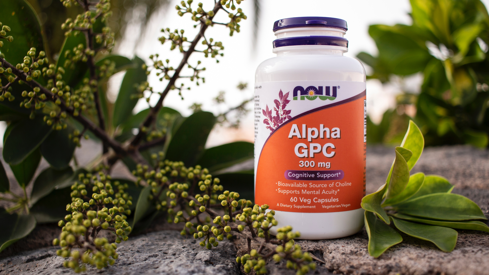

새로운 사실은 우리를 늘 새롭게 한다. 새로운 환경을 만들어 지는 동시에 뇌속에서는 도파민이 형성되어 우리를 괴롭히게 될것이다. 이것이 바로 중독이다.

중독은 새로운것을 갈구할수도 있으며 새로운것을 배제할수도 있다. 하지만 우리는 이러한 사실을 모른체 하루를 살고 있다. 그러한 사실을 우리는 뇌에서 인지를 할 수 있어야 하는데 우리는 그사실을 모르고있다. 그사실을 알기위해서는 우리는 인지능력을 최대로 끌어 올릴수 밖에 없을것이다.